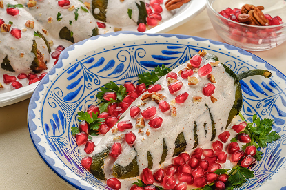
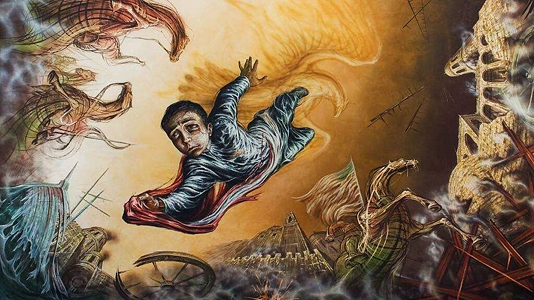
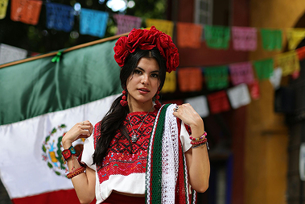

Dato Curioso (Los Chiles en Nogada): Se crearon en Puebla a finales de septiembre de 1821 por monjas agustinas para agasajar a Agustín de Iturbide tras firmar los Tratados de Córdoba, usando los tres colores trigarantes (verde, blanco y rojo).

Mito desmentido (Juan Escutia y la bandera): La creencia popular sostiene que Juan Escutia se arrojó envuelto en la bandera nacional, pero registros militares señalan que el lábaro patrio fue en realidad capturado como trofeo de guerra por el ejército estadounidense en la azotea del castillo.

Dato Curioso (Mes Patrio): A septiembre se le llama oficialmente "Mes de la Patria" en México porque concentra el nacimiento del movimiento (16 de sep), su victoria definitiva (27 de sep) y la resistencia en Chapultepec (13 de sep).
